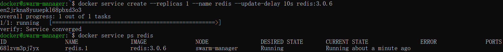

Docker Swarm 是 Docker 的集群管理工具。它将 Docker 主机池转变为单个虚拟 Docker 主机。 Docker Swarm 提供了标准的 Docker API，所有任何已经与 Docker 守护程序通信的工具都可以使用 Swarm 轻松地扩展到多个主机。
支持的工具包括但不限于以下各项：
- Dokku
- Docker Compose
- Docker Machine
- Jenkins
原理
swarm 集群由管理节点（manager）和工作节点（work node）构成。
- swarm mananger：负责整个集群的管理工作包括集群配置、服务管理等所有跟集群有关的工作。
- work node：即图中的 available node，主要负责运行相应的服务来执行任务（task）。

使用
1、创建 swarm 集群管理节点（manager）
创建 docker 机器：
docker-machine create -d virtualbox swarm-manager

初始化 swarm 集群，进行初始化的这台机器，就是集群的管理节点。
docker-machine ssh swarm-manager
docker swarm init --advertise-addr 192.168.99.107 #这里的 IP 为创建机器时分配的 ip。

以上输出，证明已经初始化成功。需要把以下这行复制出来，在增加工作节点时会用到：
docker swarm join --token SWMTKN-1-4oogo9qziq768dma0uh3j0z0m5twlm10iynvz7ixza96k6jh9p-ajkb6w7qd06y1e33yrgko64sk 192.168.99.107:2377
2、创建 swarm 集群工作节点（worker）
这里直接创建好俩台机器，swarm-worker1 和 swarm-worker2 。

分别进入两个机器里，指定添加至上一步中创建的集群，这里会用到上一步复制的内容。

以上数据输出说明已经添加成功。
上图中，由于上一步复制的内容比较长，会被自动截断，实际上在图运行的命令如下：
$ docker swarm join --token SWMTKN-1-4oogo9qziq768dma0uh3j0z0m5twlm10iynvz7ixza96k6jh9p-ajkb6w7qd06y1e33yrgko64sk 192.168.99.107:2377
3、查看集群信息
进入管理节点，执行：docker info 可以查看当前集群的信息。
docker info

通过画红圈的地方，可以知道当前运行的集群中，有三个节点，其中有一个是管理节点。
4、部署服务到集群中
注意：跟集群管理有关的任何操作，都是在管理节点上操作的。
以下例子，在一个工作节点上创建一个名为 helloworld 的服务，这里是随机指派给一个工作节点：
docker@swarm-manager:~$ docker service create --replicas 1 --name helloworld alpine ping docker.com

5、查看服务部署情况
查看 helloworld 服务运行在哪个节点上，可以看到目前是在 swarm-worker1 节点：
docker@swarm-manager:~$ docker service ps helloworld

查看 helloworld 部署的具体信息：
docker@swarm-manager:~$ docker service inspect --pretty helloworld

6、扩展集群服务
将上述的 helloworld 服务扩展到俩个节点。
docker@swarm-manager:~$ docker service scale helloworld=2
可以看到已经从一个节点，扩展到两个节点。

7、删除服务
docker@swarm-manager:~$ docker service rm helloworld
查看是否已删除：

8、滚动升级服务
将介绍 redis 版本如何滚动升级至更高版本。
创建一个 3.0.6 版本的 redis。
docker@swarm-manager:~$ docker service create --replicas 1 --name redis --update-delay 10s redis:3.0.6

滚动升级 redis 。
docker@swarm-manager:~$ docker service update --image redis:3.0.7 redis

看图可以知道 redis 的版本已经从 3.0.6 升级到了 3.0.7，说明服务已经升级成功。
9、停止某个节点接收新的任务
查看所有的节点：
docker@swarm-manager:~$ docker node ls

可以看到目前所有的节点都是 Active, 可以接收新的任务分配。
停止节点 swarm-worker1：

注意：swarm-worker1 状态变为 Drain。不会影响到集群的服务，只是 swarm-worker1 节点不再接收新的任务，集群的负载能力有所下降。
可以通过以下命令重新激活节点：
docker@swarm-manager:~$ docker node update --availability active swarm-worker1